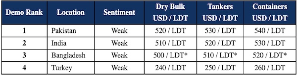

inWeekly Demolition Reports20/12/2022

Another lackluster week has descended across sub-continent markets, with India once again suffering steel reversals, a Bangladeshi market paralyzed by L/C restrictions, and a Pakistani market that is still confused whether to dip in to the buying of whatever unit comes available.
On the far end, Turkey continues its dead drift through the recycling stream as rumors surface about discussions with Aliaga Buyers regarding 2023 deliveries, in addition a degree of stability in its fundamentals noticed over the last couple of weeks.
Overall, tonnage flow has started to increase as well – particularly in the container sector, which has come off significantly since the impressive peaks seen over the last two years. Tankers too, continue to trade profitably whilst dry bulk markets (and Capes in particular) endure volatile weeks of fluctuations.
Meanwhile, China’s relaxation of Covid restrictions is expected to bring some positivity back into the markets post New Year, as the world slowly gets back to normal after almost three years of varying degrees of Covid restrictions.
On the global front, stock markets have plunged this week off the back of announcements of further rate hikes, in order to try and ease some of the soaring global inflation, as recession fears in the EU, U.K., and the U.S. loom ever larger.
As such, for recycling markets, it is a slightly bleak and glum end to the year, with prices, economies, fundamentals, and sentiments showing no signs of stabilizing just yet, and thus, Sellers and Cash Buyers remain in a state of limbo when considering the sale of older assets.
For week 50 of 2022, GMS demo rankings / pricing for the week are as below.

📄 Download PDF: Ship-recycling-market-insight-week-50-2022-Limbo.pdfSource: GMS,Inc. ,https://www.gmsinc.net/gms_new/index.php/web